Potato Buns

Fluffy mashed potatoes add a fabulous soft testure and moistness to these easy potato buns. the recipe for the buns is a simple one, made with the addition of the mashed potatoes and some cooking liquid.the potato bun is similar to the bricohe bun, but the potatoes give it a linger life and moister texture. If you have leftover mashed potatoes, feel free to used them and skip steps 2 & 3. You can replace the potato cooking liquid with water or milk.
Why add potatoes to bread? Potatoes produce a lighter crumb and moister texture, and they even helo the dough rise more quickly. the starch in the potatoes and cooking water also help hold moaisure in the bund, keeping them soft and fresh for a more ectended period.
Use potato buns for delicious burger, or fill them with your favorite sandwich filling. They are excellent buns to use for sloppy joes, pulled pork, or breakfast sandwiches.

"A Note From Our Recipe Tester"
"Homemade potato buns will get you ready to fire-up the grill for the best burgers this summer! This recipe was very straightforward and also a great way to use up extra potato you have on hand. The dough is a little sticky, but nothing some extra flour can't handle."

Potato Buns
Prep: 25 mins
Cook: 24 mins
Rise Time: 90 mins
Total: 2 hrs 19 mins
Yield: 9 Buns
Ingredients
- 1 large russet potato, about 12 ounces
- 3 tablespoons unsalted butter, melted
- 2 tablespoons granulated sugar
- 1 1/4 teaspoons kosher salt
- 2 1/4 teaspoons instant yeast
- 1 large egg, lightly beaten
For the topping:
- 1 large egg
- 1 tablespoon water
- 1 teaspoon sesame seeds
Steps to make
- Gather the ingredients.
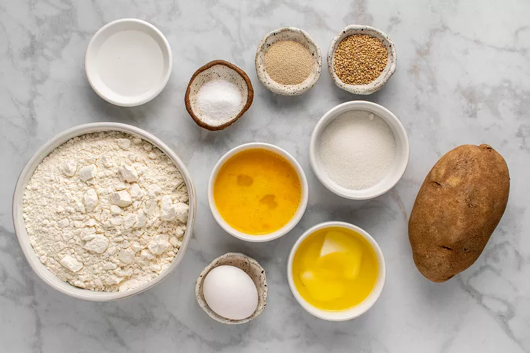
- Peel the potato, cut it into small chunks. Place in a medium sauce pan covered with unsalted water. Bring to a boil over the medium-hihg heat. cover the pan and reduce the heat to medium. cook until potato is fork-tender, 8-10 minutes.
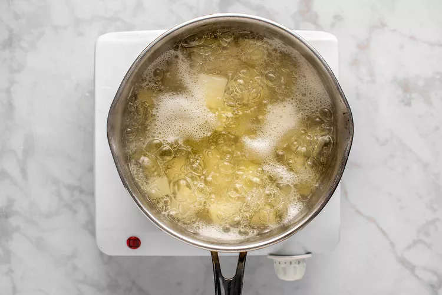
- reserve 2/3 cup of the cooking liquid and sed aside. Drain the potato, then prcess through a potato ricer or mill into a large bowl. Alternatively, you can mash with a masher until smooth.
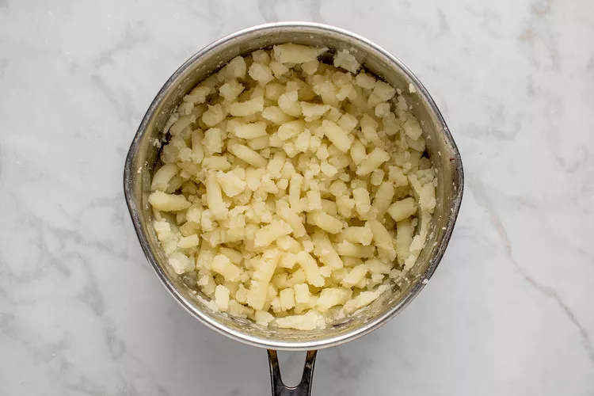
- Add the butter and cooking liquid to the potato. Mix until smooth. Let the mashed potato cool to luke warm. Note: You can place the potato bowl in an ice bath and stirr constantly, to help speed up the cooking pocess. You want the potato mixture to retain some heat but not over 110F degree this will kill the yeast.
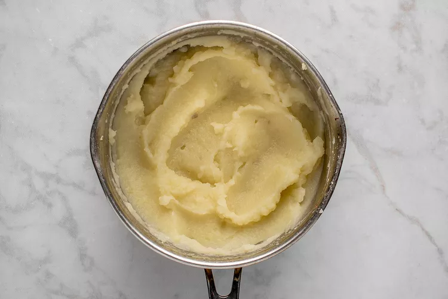
- Combine the flour, sugar, salt, yeast, egg and potato in a bowl of a stand mixer. Stir with a spatula or mix with your hands until combined.
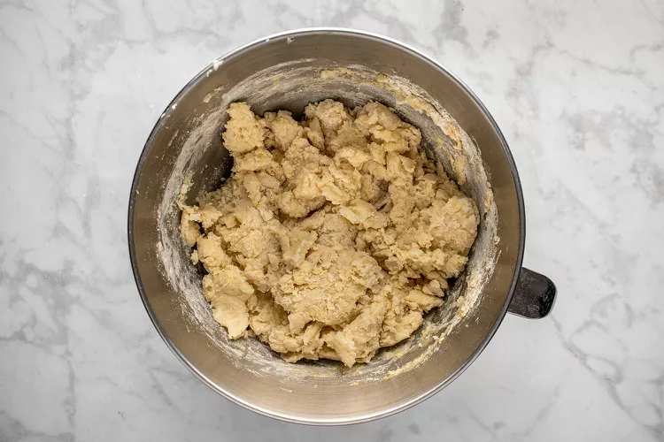
- Attach the dough hook and knead until the dough comes together, about 8 minutes. the dough will be somewhat soft and sticky.
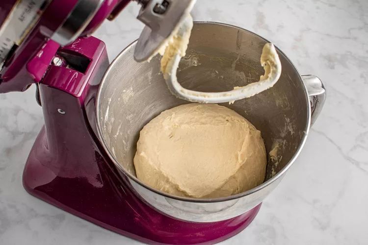
- Scrape dough into a large, greased bowl. Turn to coat the dough. Cover the bowl and let rise in a warm spot until double in volume, about 1 hour.
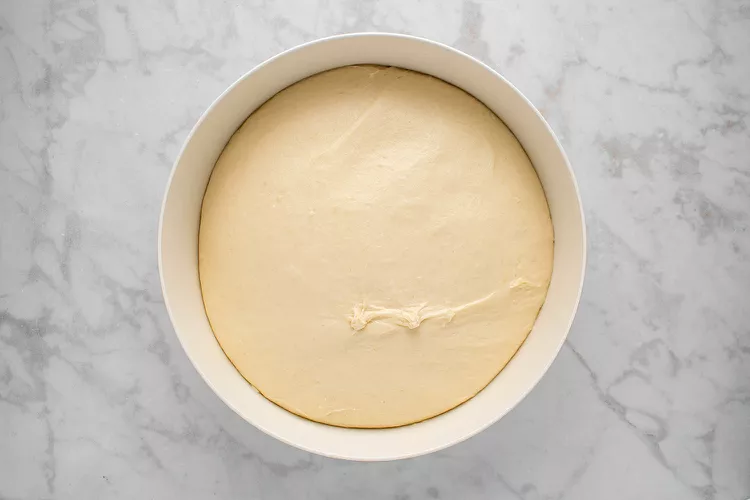
- Punch the dough down and transfer it to a lightly floured surface.
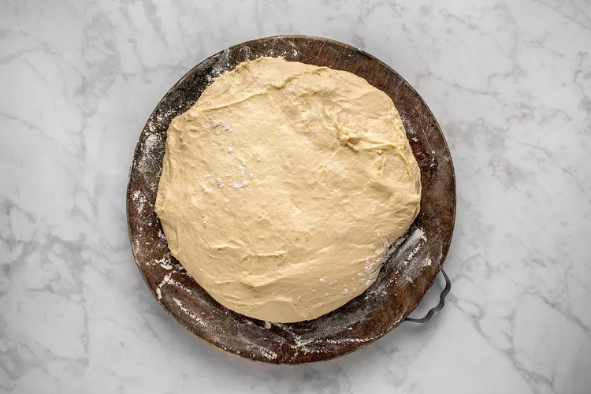
- Shape the dough into 9 smooth, uniform balls, transfering them to a large, parchment-lined, baking sheet 2-3 inches apart. There should be enough room on a half-sheet pan, but if your pans are smaller you may need two.
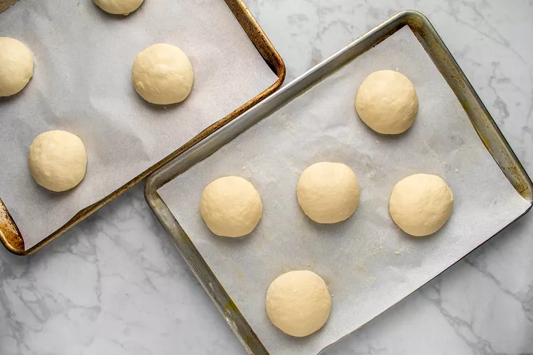
- Flaten the shaped buns slightly by pressing gently with the palm of your hand.
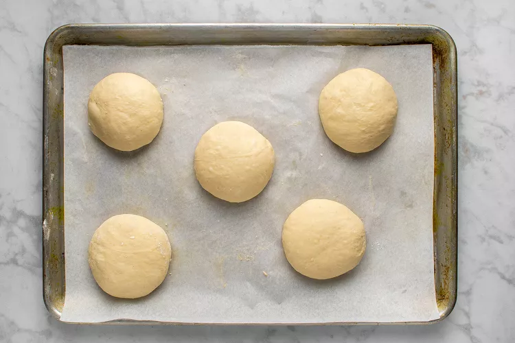
- Place a light kithcen towel over the buns and let them rise for 30 minutes. Meanwhile, position a rack in the center of the oven and heat to 375F degreens.
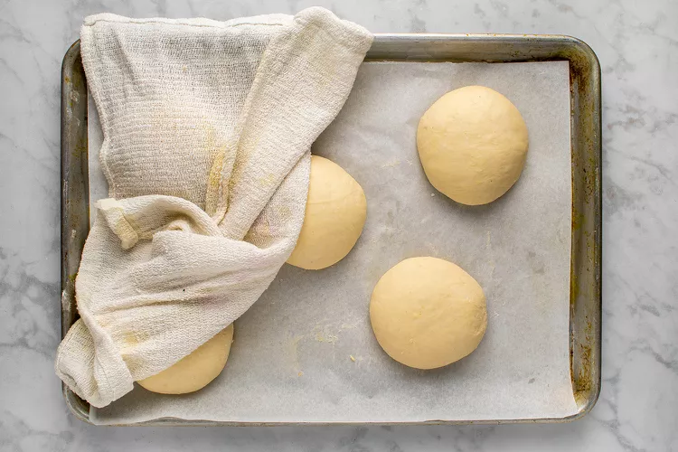
- When ready to bake the buns, make the egg wash. Whisk the egg with water. Gently brush the buns with the egg wash, then sprinkle with sesame seeds
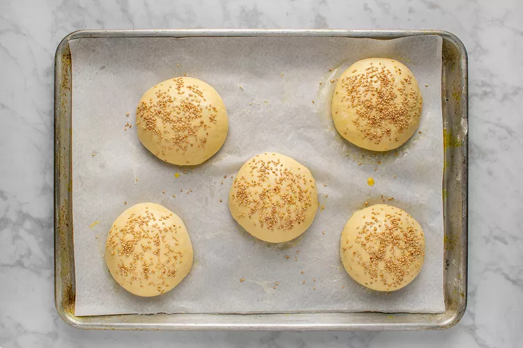
- Bake until golden brown, 12-15 mintues. Let cool for 5 minutes, then transfer to a wire rack to cool completely.
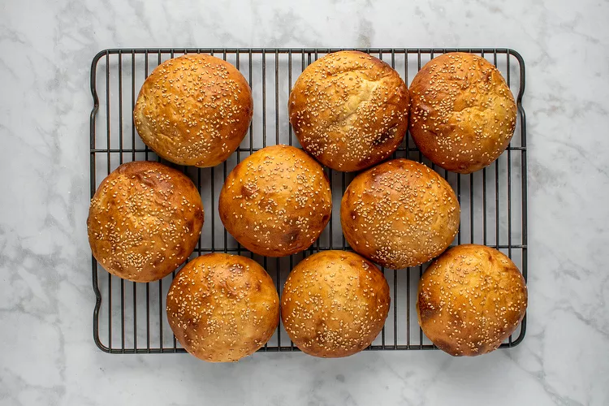
Tips
- For uniform buns, use a scale to weigh them. before shaping weigh the dough and divide it by 9 for large buns, 10-12 for medium buns or 14 to 16 for slider buns.
- Apply the egg wash very gently to avoid deflating the Buns
- Store the buns in a resealable food storage bag and store them at room temperature for up to 4-5 days.
See More Recipes!